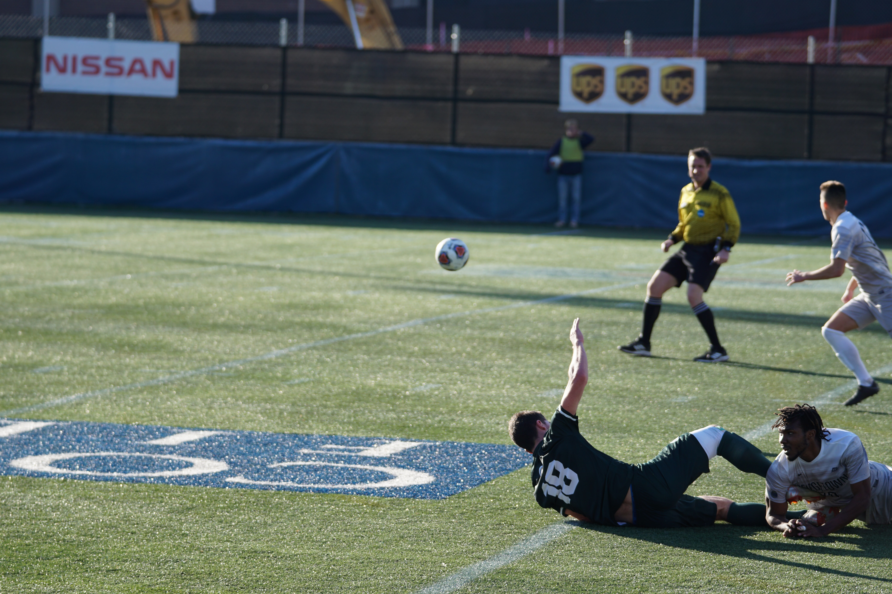

The rules of soccer can be some what complicated if you have never watched or played before, so I'm here to help give you some insight
The card system is pretty simple the Yellows are for fouls that aren't to serious or if the player keeps repeating the same foul and the ref has already warned him more than twice then the ref can give him a yellow. If a player receives a yellow they have to come off the field but a player can be subbed in for them right away and he or she can go in right away. Now the more serious card the red card which if a player gets this card they are suspended from playing for two games without including the game they are currently in. These are only given in the more serious situations, if a player receives a yellow card twice the third is a red card. If fight happens then the players who were fighting are given both reds. Also if a teams gets red carded they have to be down a player for the rest of the game this is all you really need to know about the card system.
There are many important rules to follow because they could cost a team a game, such as fouling someone inside the goal box which would result in a pk which it is where a player gets a free shot at goal and only the goalie can block and they don't have a high success rate of blocking it. Also never touch or catch the ball unless you are the goalie. If you team kicks the ball out then it is the other teams ball if is kicked out of the side lines then it is a throw but if it goes out of the goal line then is a corner kick these are some of the most pressing rules there are.
email: afusco059@gmail.com | phone: 917-555-1098 | address: 371 284th St, New York, NY, 10001